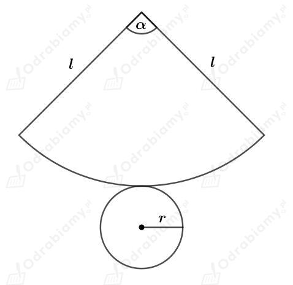

| Pole powierzchni bocznej stożka o promieniu podstawy r i tworzącej długości l wyraża się wzorem: |
Â
Dany jest stożek o promieniu podstawy długości r i tworzącej długości l.Â
Naszkicujmy siatkę tego stożka. Mamy:Â

Powierzchnia boczna stożka jest wycinkiem koła o promieniu długości l i kącie środkowym𝛼.Â
Długość łuku tego wycinka jest taka jak obwód podstawy stożka, czyli obwód koła o promieniu długości r.Â
Stąd:
Wyznaczmy pole powierzchni bocznej, czyli pole wycinka koła o promieniu długości l i kącie środkowym𝛼. Mamy:
| Pole powierzchni całkowitej stożka o promieniu podstawy r i tworzącej długości l wyraża się wzorem: gdzie Pp jest polem powierzchni podstawy stożka, a Pb jest polem powierzchni bocznej tego stożka.  |
Â
Wycinek koła o promieniu długości l=6 i kącie środkowym 120o po zwinięciu jest powierzchnią boczną stożka.Â
Wyznaczmy długość x tego łuku. Mamy:
Po zwinięciu, łuk ten staje się obwodem koła o promieniu długości r, będącego podstawą tego stożka. Mamy stąd: Â
Wyznaczmy pole powierzchni podstawy tego stożka. Mamy:
Wyznaczmy pole powierzchni bocznej tego stożka. Mamy:
Wyznaczmy pole powierzchni całkowitej tego stożka. Mamy:
| Pole powierzchni całkowitej stożka o promieniu podstawy r i tworzącej długości l wyraża się wzorem: gdzie Pp jest polem powierzchni podstawy stożka, a Pb jest polem powierzchni bocznej tego stożka.  |
Â
Dany jest stożek, którego podstawą jest koło o promieniu długości r i tworząca ma długość l.Â
Wiedząc, że pole tego koła jest równe 36𜋠cm2 otrzymujemy: Â
Powierzchnia boczna tego stożka po rozwinięciu jest wycinkiem koła o promieniu długości 9 cm wyznaczonego przez kąt środkowy 𝛼. Więc l=9 cm.Â
Wyznaczmy pole powierzchni bocznej stożka. Mamy:
Korzystając ze wzoru na pole wycinka koła mamy: